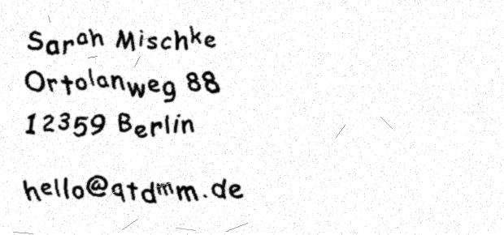

Angaben gemäß § 5 DDG
Sarah Mischke, Deutschland

Anschrift und E‑Mail‑Adresse sind zum Schutz vor automatisiertem Auslesen als Bild dargestellt.
Verantwortlich für den Inhalt nach § 18 Abs. 2 MStV: Sarah Mischke, Anschrift wie oben.
QtDMM ist freie Software unter der GNU General Public License, Version 3. Copyright 2001–2016 Matthias Toussaint, 2016–2026 tuxmaster und weitere Beitragende (siehe AUTHORS). Diese Website ist eine private, nicht‑kommerzielle Projektseite. Genannte Produkt‑ und Herstellernamen (Uni‑Trend, Voltcraft, Metex u. a.) sind Marken der jeweiligen Inhaber und dienen nur der Beschreibung der Kompatibilität.
Die Inhalte dieser Seiten wurden mit größter Sorgfalt erstellt. Für die Richtigkeit, Vollständigkeit und Aktualität der Inhalte kann jedoch keine Gewähr übernommen werden. Die Software wird ohne Gewährleistung bereitgestellt; Einzelheiten regelt die GPL v3.
Diese Website enthält Links zu externen Websites Dritter (insbesondere GitHub), auf deren Inhalte kein Einfluss besteht. Für die Inhalte der verlinkten Seiten ist stets der jeweilige Anbieter oder Betreiber verantwortlich. Zum Zeitpunkt der Verlinkung waren keine Rechtsverstöße erkennbar.
Es besteht keine Bereitschaft und keine Verpflichtung zur Teilnahme an Streitbeilegungsverfahren vor einer Verbraucherschlichtungsstelle.